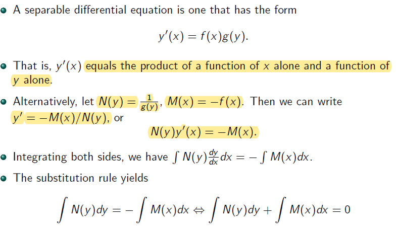
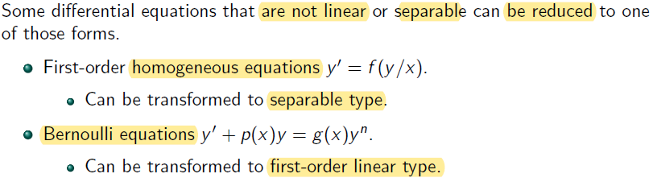

Lecture 2
Separable Differential Equations

dep. var. →y
ind. var. →x
Alternative way of writing y′(x)=f(x)g(y)→dxdy=f(x)g(y)
Notice that the second dx in ∫N(y)dxdydx is from N(y) since N(y)=g(y)1 is a function of y where y is a function of x
Example
f(x)→x2 and g(y)→1+y21 in the y′(x)=f(x)g(y)

DEs of more than one type
- Have more than 1 method to solve

It is first order linear because it has general form of y′(t)+p(t)y(t)=g(t) (remember g(t) is a constant / known term depended or not depended on ind. var. t)
- rewrite this into dtdv−mbv=g, where g can be also written as gt0
It is separable → rewrite this into dtdy=mb(bmg−v)
- mbt0 equivalents to f(x) in y′(x)=f(x)g(y)
- bmg−v equivalents to g(y) in y′(x)=f(x)g(y)
When A=0, v(t)=bmg is not a solution
- bmg−v=0 is excluded by separation of varibale since A=±e−C e−C can never be 0
New DEs from old

First-order Homogeneous Equations
xv′=f(v)−v
x1(f(v)−v)=v′→x1(f(v)−v)=dxdv
Example

Rewrite 2xyx2+3y2 into 2xyx2+2xy3y2
xv′=2v1+v2→xdxdv=2v1+v2
xdv=2v1+v2dx→1+v22vdv=xdx
Integrate both side (use u-sub u=1+v2 for the left side)
Bernoulli Equations

Side Note:
- rememeber y is function of x
- mupltiply (1−n)y−n to remove yn on the right side
Example